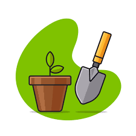

2024 · UX/UI
Bloomz: Mobile Interface Prototype
A conceptual mobile interface designed to help gardeners manage their plants, organize tasks, and visualize their garden layout.

Welcome to my portfolio website ! I'm a bachelor student at Université Paris-Saclay and here is a space where I share selected projects, interests, and experiments.
UI/UX · INTERACTION DESIGN
2024 · UX/UI
A conceptual mobile interface designed to help gardeners manage their plants, organize tasks, and visualize their garden layout.
2026 · Figma
A UX research and interface design project addressing cognitive overload in university lectures.

OBJECT ORIENTED PROGRAMMING PROJECTS
2024 · JAVA
An interactive game developed in Java inspired by the mobile game doodle jump.
2025 · JAVA
My version of the game "Forbidden Island" using Object Oriented Programming.
2024 · C++
Simulation of an ant colony navigating a grid, search for sugar, deposit pheromones, and interact with nests.
COMPUTER GRAPHICS
2025 · PROCESSING
Interactive 3D game built in Processing, featuring a multi-level pyramid labyrinth, animated mummies.
2026 · BLENDER
A soft and calm interaction when you feel stress? Try ADIA through Augmented Reality.
AI / ML PROJECTS
2024 · PYTHON
Implementation of a supervised image classification model in Python to study how neural networks learn and distinguish visual patterns.
2025 · PYTHON
Multi-class medical classification project exploring how supervised learning models can assist in early detection of ocular pathologies.
NETWORK
2024 · C
A C-based client–server application demonstrating network communication using both TCP and UDP protocols.